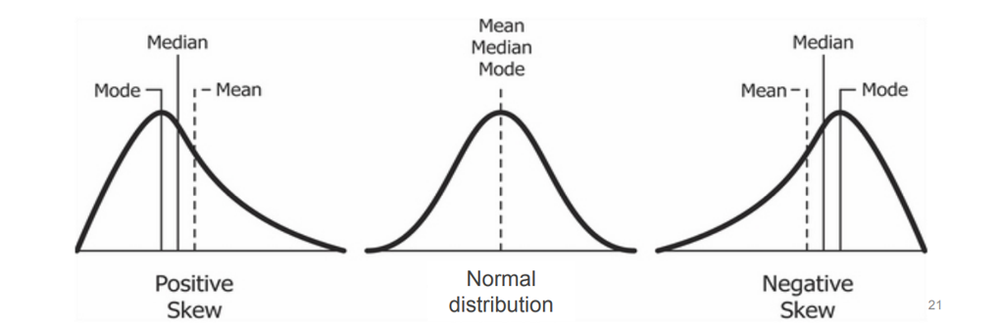

Descriptive statistics is a way to describe data using measures of central
tendencies and variation (how spread out the data is). These allow us to make
evidence-based decisions.
Skewness is a measure of a dataset’s symmetry (or lack of symmetry).
MS Excel function is SKEW()
A perfectly symmetrical data set will have a skewness of 0 and is often known as
a normal distribution. A skew less than zero (negative) has a long tail to the
left. A skew greater than zero (positive) has a long tail to the right.

Fig. 3.7 Relationship between mean, median, mode with the skewness.#
Note
Please note that the relationship between mean and median only serves as a rule of thumb for the skewness. If possible, you should always compute the skewness itself instead of relying on a rule of thumb. The skewness can be computed in MS Excel via the SKEW() function (which computes the adjusted Fisher-Pearson standardized moment coefficient). Read more about this here.
Kurtosis is a measure of the peakedness and flatness of a distribution.
MS Excel function is KURT().
Distributions with negative kurtosis exhibit tail data exceeding the tails of
normal distribution. Distributions with positive kurtosis exhibit tail data that
is generally less extreme than the tails of the normal distribution.